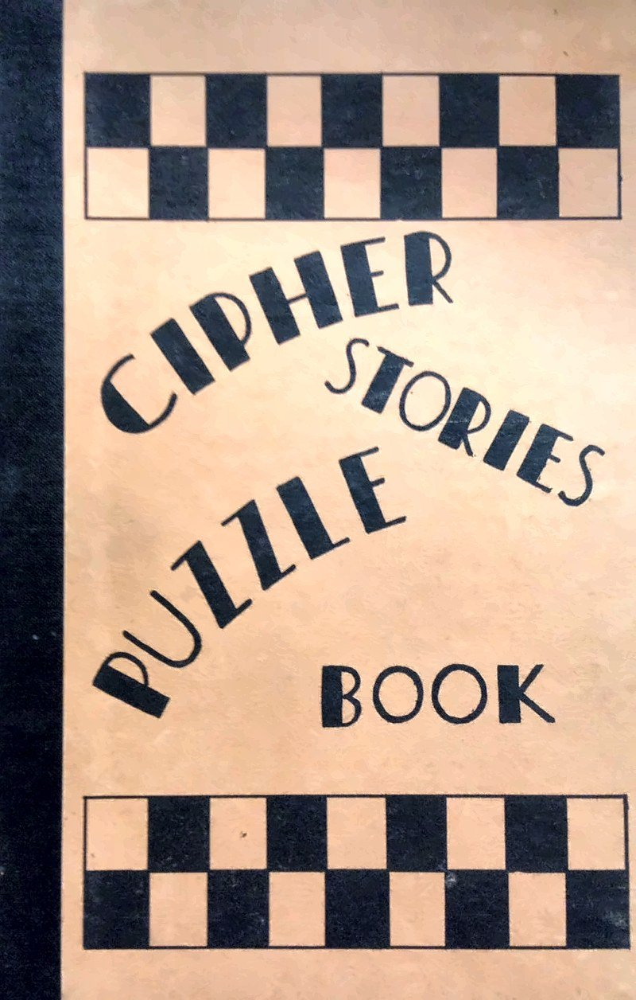
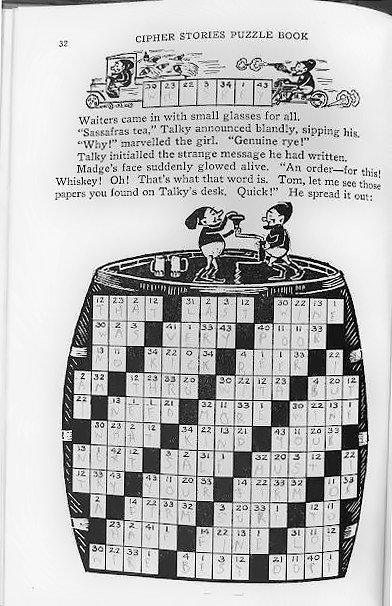
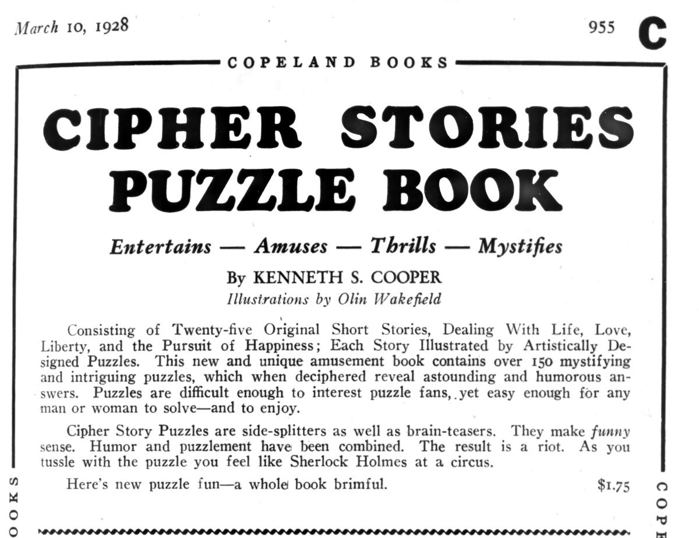
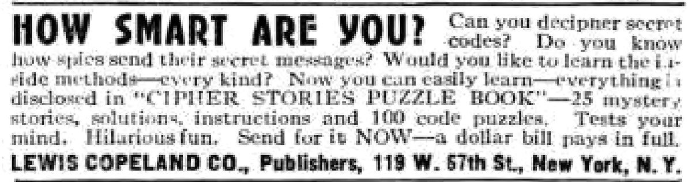
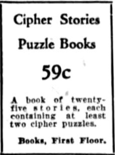

Tan boards. Black checkerboard bands. The words CIPHER STORIES PUZZLE BOOK almost falling from top to bottom. Published in 1928 by Lewis Copeland Company of New York it contains twenty-five short stories, each containing at least two cipher puzzles, in 127 illustrated pages. It looks, unnervingly, like a modern casual puzzle book that somehow arrived a century early.

Cipher Stories Puzzle Book (Lewis Copeland Co., New York, 1928).
The full subtitle is worth the price of admission itself: Cipher Stories Puzzle Book: Consisting of twenty-five original short stories, dealing with life, love, liberty, and the pursuit of happiness; each story containing at least two vital cipher puzzles. Pure subtitle delight!
We do not think it invented Mystery Puzzle Games. We do think it belongs on the family tree — as a side branch that shows how early the hobby was already trying on different clothes.
What is it?
Cipher Stories is not one long casefile. It isn’t a murder mystery. It is twenty-five unrelated short stories that share a single puzzle style. There is no overall story or final “a-ha!” on the last page. What there is is a rhythm: read, stall, solve, finish, breathe, read, stall, solve, finish, breathe.
You read until the prose hits a wall – a transposition cipher that you need to crack before the story will finish making sense. Most stories give you two puzzles plus clues in the narrative. The loop is almost embarrassingly clear once you have done it once:
Find the hint in the story.
Solve the little keyword mini-puzzle.
Fill the known letters into the main grid — laid out like a crossword.
Finish the story.
One example of how it works
On page 32, a character named Talky orders “Sassafras tea,” somebody marvels “Genuine rye!”, and Madge works out that the strange word on the message is “[redacted–no spoilers]” It is 1928. Prohibition is the joke. The main grid is drawn as a literal barrel, with two of Wakefield’s little figures dancing on the lid.

Page 32: a Prohibition-era story that stops for a cipher grid drawn as a barrel. Illustrations by Olin Wakefield. A previous owner seems to have pencilled in the answer.
You could brute-force the puzzles, but that would ruin the fun. This is a casual introduction to ciphers, not a flex for expert code breakers. This book fits in a “fun zone” — enough work to feel like play, but easy by modern Mystery Puzzle Game standards. It plays best one puzzle at a time, then put it down and come back another day for another fun little puzzle.
Modern puzzle books often stitch 1–2 page puzzles under an overarching story or theme. Cipher Stories flips the arrangement: the theme is the mechanic. One trick, twenty-five stages…and a wee bit of fun!
Personae Dramatis…
Text: Kenneth S. Cooper. Pictures: Olin Wakefield.
We have not found other works by either man. This appears to be their first and only book, or period pseudonyms for people who did not want this genre on a résumé, perhaps they worked in the crossword field under tight contracts? We can only speculate at this point.
Wakefield’s drawings are genuinely cute throughout with little figures, and well drawn, which leads to speculation he was already an artist and was working under a pseudonym.
How the world (barely) noticed
The first mention we have found is a full Copeland Books notice in The Publishers Weekly on 10 March 1928. It is a pure 1920s ad copy — “Entertains — Amuses — Thrills — Mystifies” — and it promises that “as you tussle with the puzzle you feel like Sherlock Holmes at a circus.” Why they didn’t go with this amazing near rhyme astounds us! The price was $1.75. A week later, the Catalog of Copyright Entries logged the book with a copyright date of 17 March 1928.

Copeland’s full-page notice in The Publishers Weekly, 10 March 1928, p. 955.
Nobody at Copeland seems to have counted the puzzles the same way twice. The subtitle says at least two per story. The trade ad says “over 150.” A later magazine ad says 100. Take your pick; maybe the math is itself a puzzle?
The price also tells the story of the success. In July 1929, a small Popular Mechanics ad from Copeland’s office at 119 W. 57th Street asked “HOW SMART ARE YOU?” and told readers to send for it now: “a dollar bill pays in full.” On 15 May 1930, a Baltimore Evening Sun department-store ad had Cipher Stories Puzzle Books at 59 cents, books, first floor. From $1.75 to 59 cents in a little over two years. That is what a branch dying on the vine looks like in newsprint.

Popular Mechanics, July 1929, p. 70: “a dollar bill pays in full.”

The Evening Sun (Baltimore), 15 May 1930: 59 cents, books, first floor.
After that, the trail dies off. No articles, no chatter, no modern reprints of note. James D. Volts still listed it in his 1938 Bibliography of Cryptography, an attempt to catalogue every published work on codes and ciphers — which is a polite way of saying the cipher people noticed and the culture did not.
Why does it belong in our Mystery Puzzle Game family tree anyway?
Mystery — thin, but real. Stories stop on a secret the cipher holds.
Puzzle — the load-bearing wall. Transposition cipher, keyword key, crossword-shaped grid, and a preface that teaches cryptography to civilians.
Game — you act. You do not just watch Legrand solve it. You can leave the book on the table and come back. Not a one-session dossier binge; a casual game for when you have time. That is a modern puzzle-book posture, wearing 1928 clothes.
What it is not: an influence we can trace onto Baffle, Photocrimes, or any later subscription box. It would appear not to have shaped later books…no sequels… no spiritual direct descendants that we can name…just no impact. It is a self-described “cipher stories” branch that died on the vine.
What it is: one of the earliest commercial books that puts story, puzzle, and mystery in one book and treats cryptography as something a reader can be taught. It pushes past the crossword books of the late 1920s without becoming a scored detective-problem book.
Poe, in 1843, gave readers a cipher they could solve. Carr, in 1926, asked them to solve before next month’s answer. Cooper and Wakefield bottled that impulse into the popular crossword craze of the era, a book you could pick up when the crossword page felt thin. The 1928 puzzle market was already thick with trivia and crossword collections. Someone tried narrative plus cipher as a casual product. It didn’t take at the time.
We like it anyway. The mechanic is honest. The drawings are charming. Somebody, at some point, sat down with a pencil and filled in the barrel, and the other pages, and learned a thing or two, and probably laughed a few times…
Sources
Cooper, K. S., & Wakefield, O. (1928). Cipher stories puzzle book: Consisting of twenty-five original short stories, dealing with life, love, liberty, and the pursuit of happiness; each story containing at least two vital cipher puzzles. New York: Lewis Copeland Co.
The Publishers Weekly, 10 March 1928, p. 955 (Copeland Books advertisement).